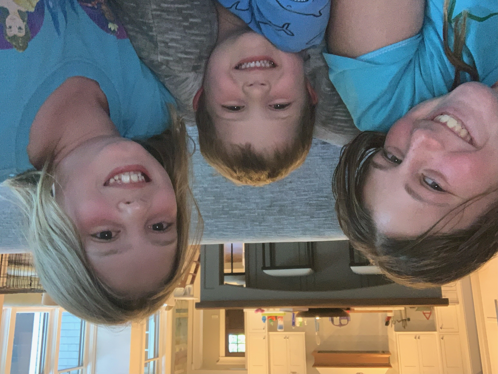
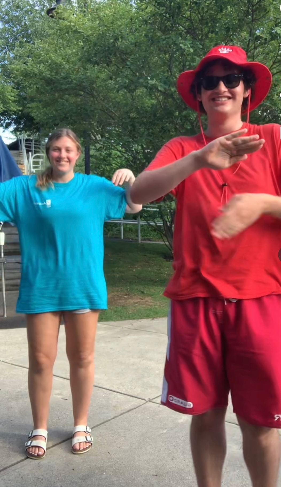
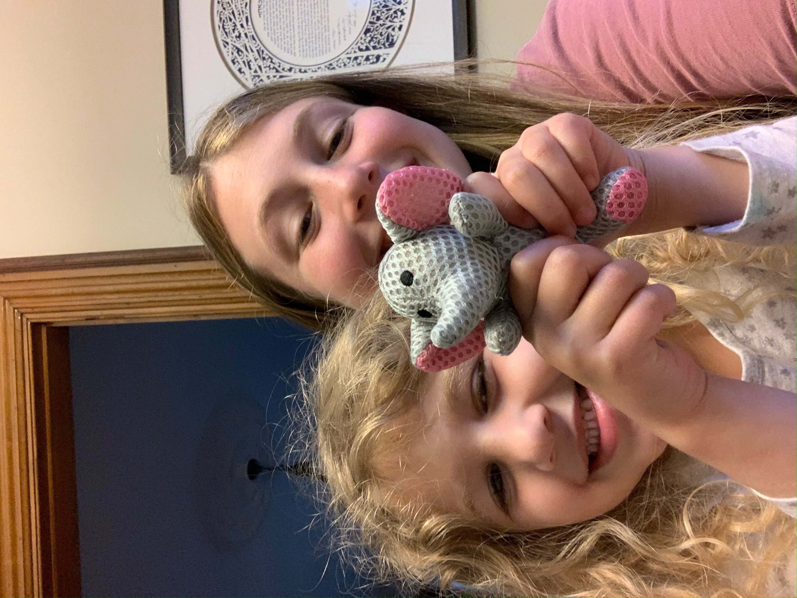
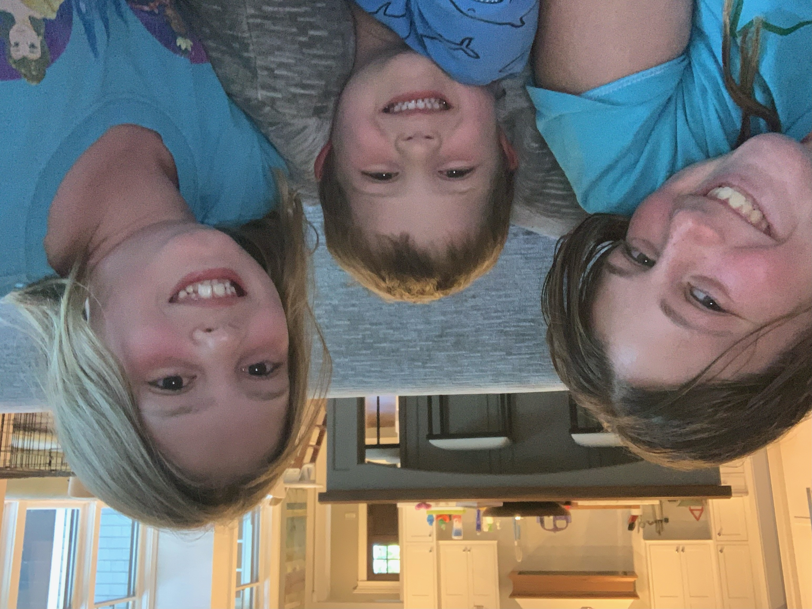
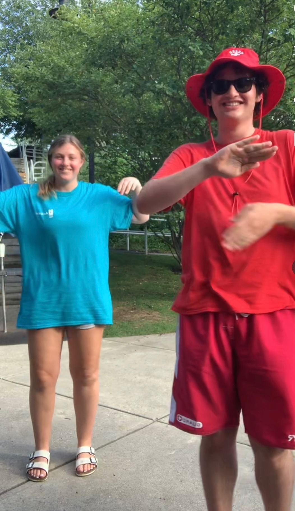
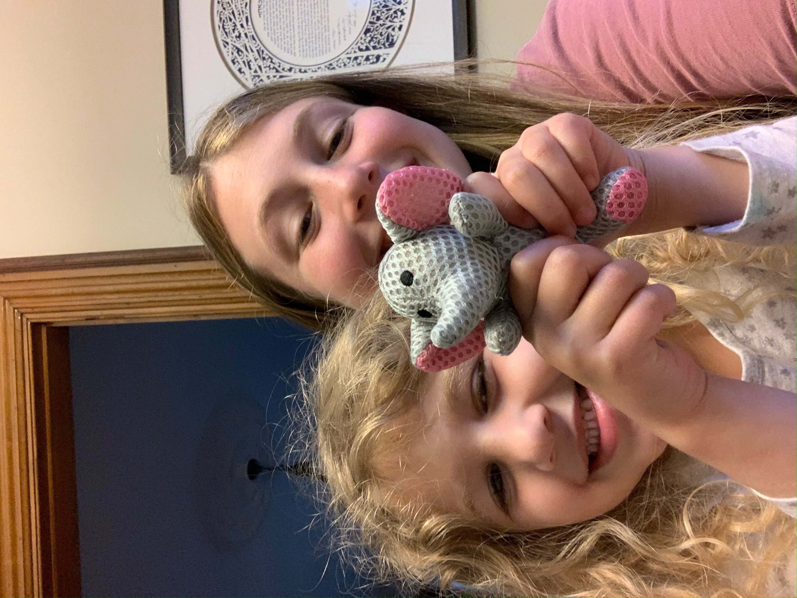

When I was younger I started by reffing soccer for 2nd through 6th grade soccer. I then started coaching kindergaten through 3rd grade soccer. From then on I did a lot of babysitting for kids ages 1 to 8. i still continue to babysit to this day.
I then taught kids ages 7 to 9 to do art projects. I took an interior design course through Parsons School of Design. I then worked at front desk of a pool at the JCC for two years.
   
  